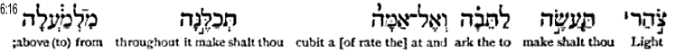
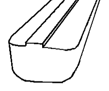

DESIGN NOTEBOOK
- THE WINDOW Home
Menu
COPYRIGHT Tim Lovett © June 2004
..
The
Window  tsohar
tsohar
|
Gen 6:16a. A
window shalt though make to the ark, and in a cubit shalt though finish
it above; (KJV) Gen
6:16a. A light shalt though make to the ark, and to a cubit shalt though
finish it upward; (RV) Gen
6:16a. You shall make a window for the ark, and you shall finish it to a
cubit from above; (NKJV) Gen
6:16a. Light thou shalt make to the ark and at (the rate of) a cubit
thou shalt make it throughout from (to) above. (Interlinear Literal. G
Berry 1897)
|

http://www.netwaysglobal.com/Interlinear/1897-Interlinear-GenI-X.djvu
A
window shalt though make...
The
window (tsohar) is not the usual word for window. In 24 appearances the KJV
translated tsohar as; noon 11, noonday 9, day 1, midday 1, noontide + 06256 1,
window 1. So window is a unique meaning for this word, all the other times it
means noon.
It looks like the tsohar
was for light. But light is 
 'owr, as in "Let there be light" or
ma'owr for a light or lamp.
'owr, as in "Let there be light" or
ma'owr for a light or lamp.
So
why the noon or midday hint? Probably because it was in the roof (above) and
maybe towards the middle of the roof (we would say 12 o'clock
position).
Ventilation:
Ridge ventilation is logical. Modern factories utilize a ridge opening to allow
rising warm air to escape. A central opening is an appropriate location for
ventilation in the ark, assuming of course that the tsohar was (preferably) not
glazed. Whether the tsohar was predominantly for light or ventilation is perhaps
not possible to determine conclusively, but it is easy to imagine that God knew
a light opening would ventilate successfully.
...in
a cubit shalt though finish it above;
This
is most often interpreted to mean a continuous slotted "cubit-tall
window" (Ref 1, p38). Woodmorappe hints at a perimeter location (Ref 1, Fig
5 p38), but the Korean researchers (Ref 2) kept the window away from the side of
the vessel. (Reducing the chance of collecting deflected wave spray and green
water on a big roll. In fact, their design limit was set as the dipping of this
corner into the water, so a perimeter window was not a good idea). The diagram
below shows the Korean form, which is almost universally accepted by
creationists. See Ark Modelers
and Rod
Walsh Ark

Image
AiG http://www.answersingenesis.org/home/area/magazines/tj/images/v8n1_safety-Figure01.gif
There
is a problem here. It is raining and there are waves rocking the vessel. Even a
generous pitch of the roof will not prevent water cascading in through the
window. A far worse situation occurs when the ark meets a cross wind and rolls
to lee side. The roof facing the wind is now at least level, if not reversed,
and the wind is helping to send it straight inside.
{kind=link}